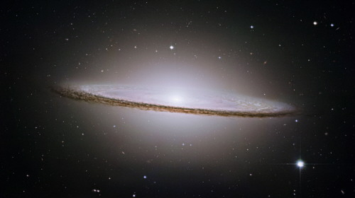

¿Qué son las galaxias?
Las galaxias son grandes sistemas formados por estrellas, planetas, gas, polvo y otros objetos celestes que están unidos por la gravedad. Se estima que hay más de 100 mil millones de galaxias en el universo observable, y cada una de ellas puede contener entre varios millones y billones de estrellas.
Tipos de galaxias
Existen varios tipos de galaxias, incluyendo:
- Galaxias espirales: tienen un núcleo central brillante rodeado por brazos espirales.
- Galaxias elípticas: tienen una forma elíptica y no tienen estructuras espirales. 
- Galaxias irregulares: no tienen una forma definida y pueden ser muy caóticas.

La Vía Láctea
La Vía Láctea es la galaxia en la que se encuentra nuestro sistema solar. Es una galaxia espiral que contiene entre 100 mil millones y 400 mil millones de estrellas, así como numerosos planetas, cometas, asteroides y otros objetos celestes. La Vía Láctea tiene un diámetro de aproximadamente 100.000 años luz y se encuentra a unos 27.000 años luz del centro de la galaxia.